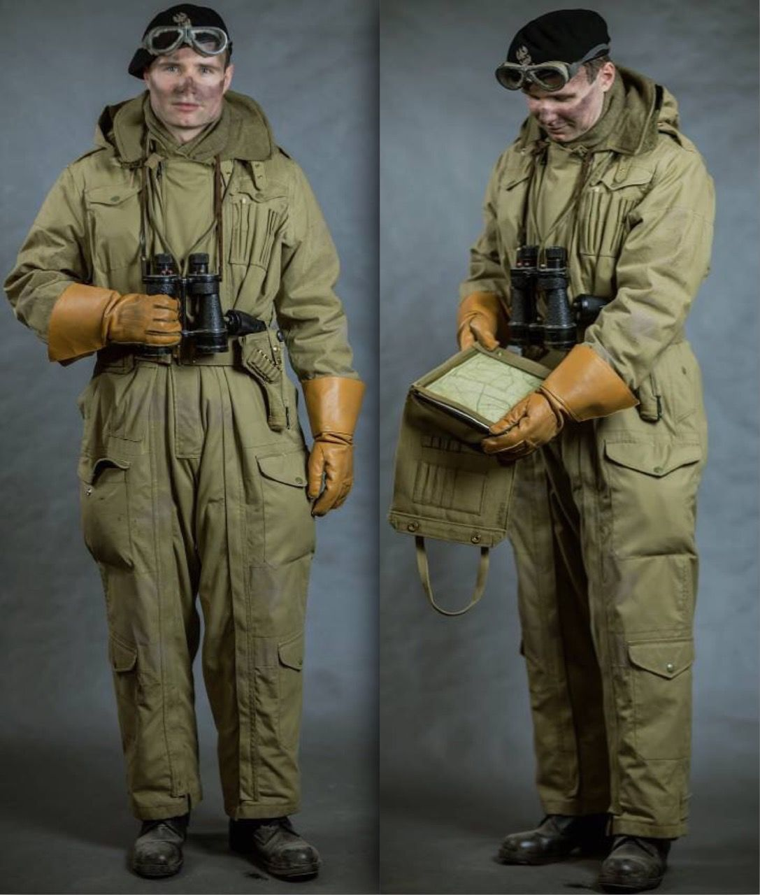

Conducteur de char de la 79th armoured Division
conducteur de char
voici l'uniforme d'un conducteur de char de la 79th armoured Division

- un beret noir typique des tankistes avec une paire de lunette anti-poussière
- une combinaison en toile
- une paire de jumelle qui équipé principalement le chef de char
- une paire de gant en cuir
- à sa ceinture un Revolver Smith & Wesson , Lee Enfield ou Colt 1911
- sa pelle pliante
- une paire de brodequins